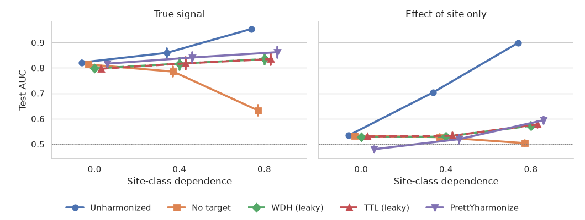

Note
Go to the end to download the full example code.
PrettYharmonize: leakage-free ComBat with class imbalance across sites#
When the class balance differs across sites, ComBat removes the class signal together with the site effect unless the class is preserved as a covariate. Preserving it, however, requires the labels of the data being harmonized, which leaks the test labels in a machine learning (ML) pipeline.
This example compares five schemes from Nieto et al. (2026) as the dependence between site and class grows:
Unharmonized: no harmonization.
No target: ComBat fitted on the training data without the class (leakage-free).
WDH (whole data harmonization): ComBat fitted on training and test data, preserving the class (leaks test data and labels).
TTL (test target leakage): ComBat fitted on the training data preserving the class, test data harmonized with their true labels (leaks test labels).
PrettYharmonize: leakage-free; every sample is harmonized pretending each possible class and a stack model combines the predictions.
Imports#
import matplotlib.pyplot as plt
import numpy as np
import pandas as pd
import seaborn as sns
from sklearn.linear_model import LogisticRegression
from sklearn.metrics import roc_auc_score
from sklearn.model_selection import train_test_split
from sklearn.pipeline import make_pipeline
from sklearn.preprocessing import StandardScaler
from uniharmony import verbosity
from uniharmony.combat import CovBat, NeuroComBat
from uniharmony.datasets import make_multisite_classification
from uniharmony.prettyharmonize import PrettYharmonizeClassifier
# The leaky schemes preserve the target in NeuroComBat on purpose, which logs a warning.
verbosity("error")
sns.set_theme(style="whitegrid")
Quick start#
Two sites with 90%/10% and 10%/90% class balance.
X, y, sites = make_multisite_classification(
n_sites=2,
n_samples=600,
n_features=10,
balance_per_site=[[0.9, 0.1], [0.1, 0.9]],
signal_strength=0.5,
site_effect_type="location+scale",
n_informative=3,
n_redundant=0,
flip_y=0.0,
random_state=0,
)
X_train, X_test, y_train, y_test, sites_train, sites_test = train_test_split(
X, y, sites, test_size=0.3, random_state=0, stratify=np.char.add(sites.astype(str), y.astype(str))
)
# PrettYharmonize wraps a ComBat-based harmonization model, a base model trained on
# the harmonized data and a stack model, each given with its parameters set. The
# base model standardizes the features: ComBat keeps the original feature units.
clf = PrettYharmonizeClassifier(
harm_model=NeuroComBat(),
base_model=make_pipeline(StandardScaler(), LogisticRegression()),
stack_model=LogisticRegression(),
random_state=0,
)
clf.fit(X_train, y_train, sites_train) # training labels are used, as usual
proba = clf.predict_proba(X_test, sites_test) # the test labels are never used
print(f"PrettYharmonize test AUC: {roc_auc_score(y_test, proba[:, 1]):.3f}")
print(f"PrettYharmonize test balanced accuracy: {clf.score(X_test, y_test, sites_test):.3f}")
PrettYharmonize test AUC: 0.784
PrettYharmonize test balanced accuracy: 0.722
The stack model was trained on the out-of-fold score matrix: one column per pretended class with the probability of class 1 given by the base model.
print(clf.score_matrix_[:5].round(2))
[[0.24 0.22]
[0.84 0.83]
[0.37 0.38]
[0.39 0.39]
[0.19 0.2 ]]
Any ComBat-based model can be used, for example CovBat, which also harmonizes the covariance of the features across sites.
covbat = PrettYharmonizeClassifier(harm_model=CovBat(), random_state=0).fit(X_train, y_train, sites_train)
print(f"PrettYharmonize + CovBat test AUC: {roc_auc_score(y_test, covbat.predict_proba(X_test, sites_test)[:, 1]):.3f}")
PrettYharmonize + CovBat test AUC: 0.783
Comparing the harmonization schemes#
def model():
"""Classifier used by every scheme."""
return make_pipeline(StandardScaler(), LogisticRegression())
def evaluate(X, y, sites, seed):
"""Return the test AUC of each scheme."""
X_tr, X_te, y_tr, y_te, s_tr, s_te = train_test_split(
X, y, sites, test_size=0.3, random_state=seed, stratify=np.char.add(sites.astype(str), y.astype(str))
)
proba = {"Unharmonized": model().fit(X_tr, y_tr).predict_proba(X_te)}
combat = NeuroComBat().fit(X_tr, s_tr)
proba["No target"] = model().fit(combat.transform(X_tr, s_tr), y_tr).predict_proba(combat.transform(X_te, s_te))
combat = NeuroComBat().fit(np.r_[X_tr, X_te], np.r_[s_tr, s_te], categorical_covariates=np.r_[y_tr, y_te])
m = model().fit(combat.transform(X_tr, s_tr, categorical_covariates=y_tr), y_tr)
proba["WDH (leaky)"] = m.predict_proba(combat.transform(X_te, s_te, categorical_covariates=y_te))
combat = NeuroComBat().fit(X_tr, s_tr, categorical_covariates=y_tr)
m = model().fit(combat.transform(X_tr, s_tr, categorical_covariates=y_tr), y_tr)
proba["TTL (leaky)"] = m.predict_proba(combat.transform(X_te, s_te, categorical_covariates=y_te))
proba["PrettYharmonize"] = PrettYharmonizeClassifier(random_state=seed).fit(X_tr, y_tr, s_tr).predict_proba(X_te, s_te)
return {scheme: roc_auc_score(y_te, p[:, 1]) for scheme, p in proba.items()}
Two scenarios: a true class signal, and effect of site only, where the features carry no class information except through the site. A good harmonization keeps the first and removes the second.
rows = []
for scenario, signal in [("True signal", 0.5), ("Effect of site only", 0.0)]:
for dependence in [0.0, 0.4, 0.8]:
balance = [[0.5 + dependence / 2, 0.5 - dependence / 2], [0.5 - dependence / 2, 0.5 + dependence / 2]]
for seed in range(10):
X, y, sites = make_multisite_classification(
n_sites=2,
n_samples=600,
n_features=10,
balance_per_site=balance,
signal_strength=signal,
site_effect_type="location+scale",
n_informative=3,
n_redundant=0,
flip_y=0.0,
random_state=seed,
)
for scheme, auc in evaluate(X, y, sites, seed).items():
rows.append({"Scenario": scenario, "Dependence": dependence, "Scheme": scheme, "AUC": auc})
results = pd.DataFrame(rows)
print(results.groupby(["Scenario", "Dependence", "Scheme"], sort=False)["AUC"].mean().unstack().round(3).to_string())
Scheme Unharmonized No target WDH (leaky) TTL (leaky) PrettYharmonize
Scenario Dependence
True signal 0.0 0.821 0.813 0.798 0.797 0.817
0.4 0.859 0.786 0.817 0.818 0.841
0.8 0.954 0.633 0.835 0.835 0.862
Effect of site only 0.0 0.534 0.533 0.528 0.530 0.480
0.4 0.704 0.527 0.530 0.533 0.519
0.8 0.899 0.504 0.572 0.578 0.594
Plotting#
g = sns.catplot(
data=results,
x="Dependence",
y="AUC",
hue="Scheme",
col="Scenario",
kind="point",
errorbar="se",
dodge=0.3,
markers=["o", "s", "D", "^", "v"],
linestyles=["-", "-", "--", "--", "-"],
height=4,
aspect=1.1,
)
g.set_axis_labels("Site-class dependence", "Test AUC")
g.set_titles("{col_name}")
for ax in g.axes.flat:
ax.axhline(0.5, color="gray", lw=1, ls=":")
sns.move_legend(g, "lower center", bbox_to_anchor=(0.5, 0.0), ncol=5, title=None, frameon=False)
g.figure.subplots_adjust(bottom=0.28, right=0.98)

Total running time of the script: (0 minutes 11.282 seconds)